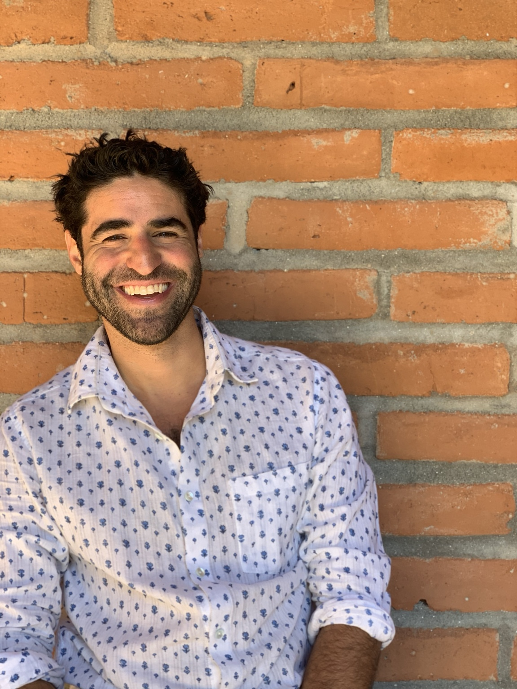
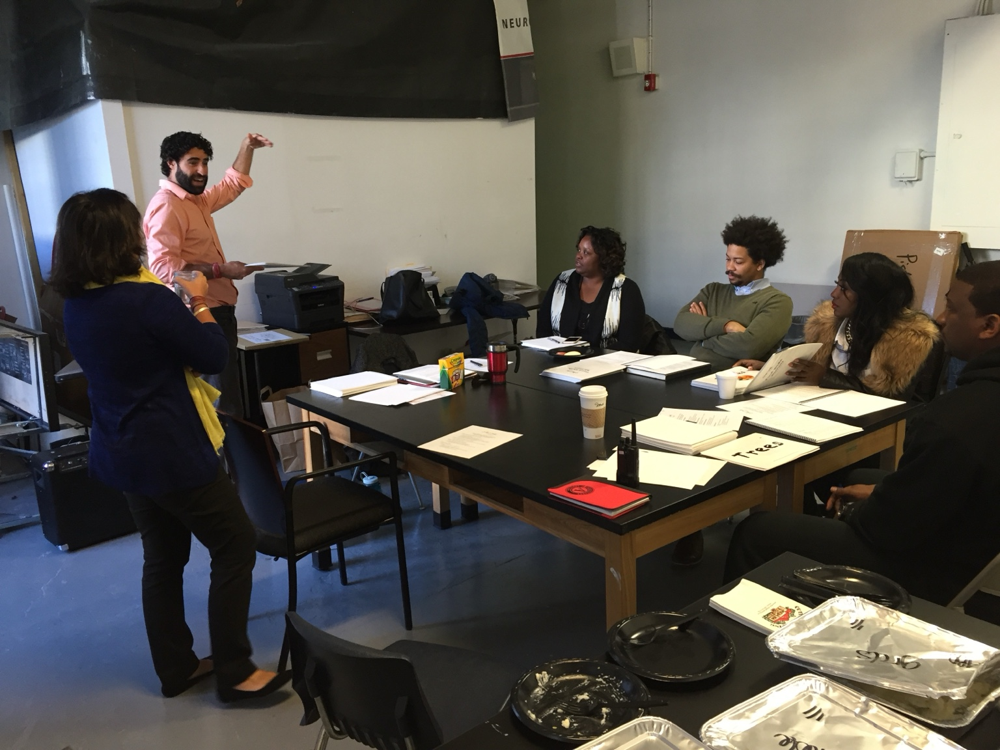
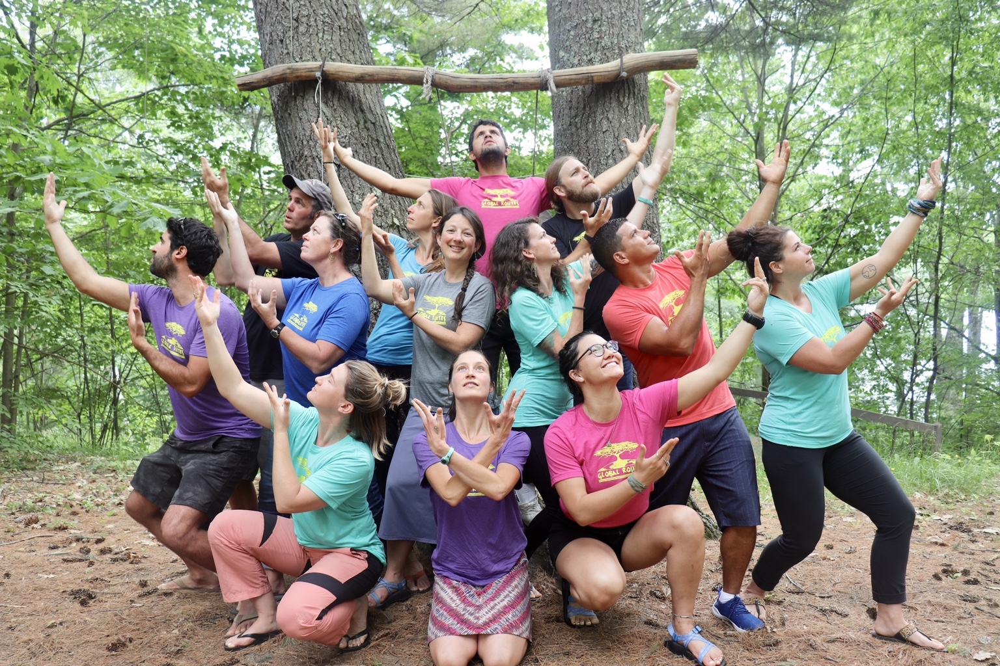

About Adam
I’ve spent most of my career in places where how people work together becomes impossible to hide.
In classrooms. On rivers. Crossing mountains. In remote communities. Inside founder teams and organizations going through difficult change.
The environments have been wildly different. The pattern hasn’t.
The work changed. The question didn’t.
What happens
between people?
When a group starts struggling, the technical problem is often only part of the story.
I notice who speaks and who doesn’t. Where trust breaks. How authority gets used. What remains unspoken. How people handle conflict, and whether they can repair when they get it wrong.
I’ve been fascinated by those questions for more than twenty years. They took me from Boston Public Schools through experiential and cross-cultural education, through building and leading organizations, and into strategy, coaching, facilitation, and culture work.
I lead Ascentric’s work personally, bringing in trusted collaborators when an engagement calls for additional expertise or delivery capacity.
A few things I carry with me
The experiences and places
that shaped the work.
Not a straight career path. A set of experiences that keep informing how I listen, what I notice, and the questions I ask.
Classrooms
I began in Boston Public Schools. Before I had language for organizational culture, I could see how trust, attention, belonging, authority, and conflict shaped what a group could learn. A performance problem was often a relationship problem too.
Experiential & cross-cultural work
Through Global Routes and cross-cultural programs in more than 30 countries, I worked with groups in village homestays, wilderness settings, and unfamiliar environments. Roles, communication, power, and interdependence become visible quickly when people have to rely on one another.
Berkeley, coaching & human connection
Training through the Berkeley Executive Coaching Institute and High Impact Leadership at Berkeley Executive Education gave structure to patterns I’d been watching for years. Presence, communication, storytelling, and careful listening remain part of how I work.
Founder & operator years
Through Global Routes, The Cookbook Project, Adobo Ace, and Ascentric, and a major merger and transition at Carpe Diem Education Group, culture became operational. Decisions affected people, money, identity, and the future of something I cared about.
Hawaiʻi & learning from place
Place-based learning and Hawaiian studies have deepened my attention to context, relationship, community, and responsibility. They keep reminding me that understanding a group starts with listening to the people and the place already there.

What the field makes visible
You find out quickly
how a group works.
In a classroom, a village homestay, or an expedition group, the unwritten rules don’t stay abstract for long. Someone speaks for everyone. Someone notices a problem and stays quiet. A disagreement either becomes a useful conversation or travels with the group.
That’s what I bring into organizations today: attention to the patterns beneath the agenda, and experience helping people work through them.
The setting changes. People still need to trust one another, make decisions, say the difficult thing, and follow through.
Founder & operator
I know what it means
to have skin in the game.
I’ve built and led purpose-driven ventures through growth, reinvention, merger, and transition. There’s a particular kind of pressure in holding the vision, the people, the money, and the decisions at once.
There’s also the work of letting something you created become something you can no longer hold by yourself. That experience informs how I work with founders and leaders facing their own version of that question.

Training & practice
Experience, with
structure behind it.
Formal training sharpens the work. So does the ongoing practice of paying attention, listening closely, and being willing to change your mind.
- Berkeley Executive Coaching Institute
- High Impact Leadership, Berkeley Executive Education
- EQ-i 2.0 certification
- Faculty Fellow, Berkeley Institute for Human Connection
- Leadership communication, storytelling, and executive presence
Where the work happens
In the room.
Across distance.
Working across Hawaiʻi, Boulder, the Bay Area, and remotely with organizations elsewhere.
Coaching, facilitation, and advisory work can happen remotely or in person. Selected field programs bring groups into a different setting when that serves the work.
Start a conversationLet’s talk
Let’s talk about the work.
Tell me what you’re working on and where you could use another perspective.